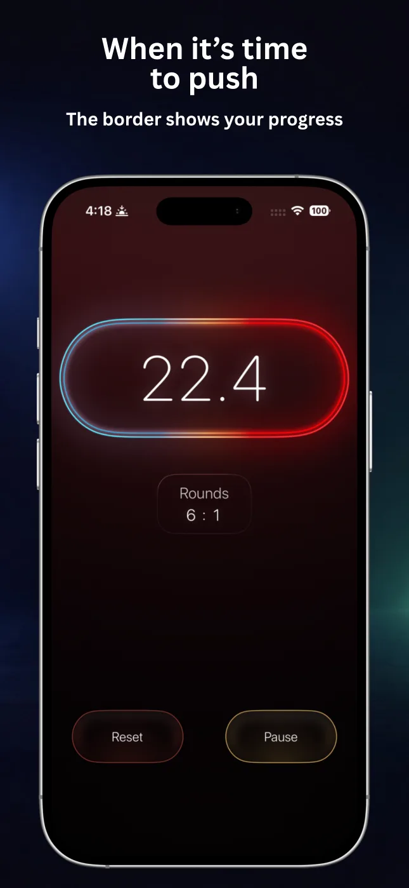
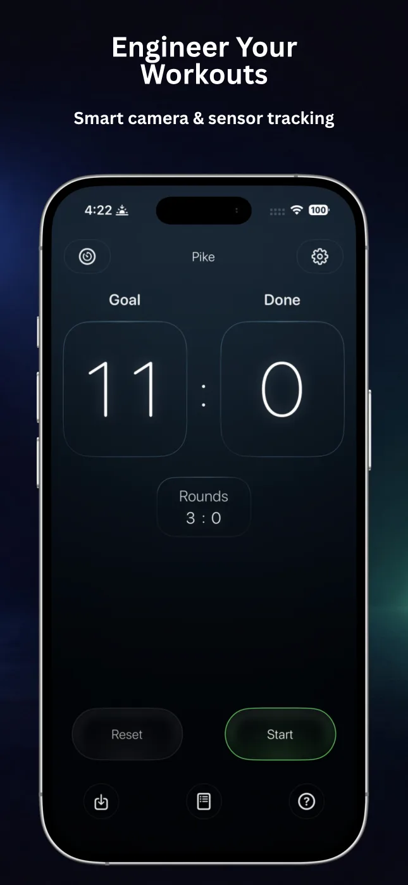
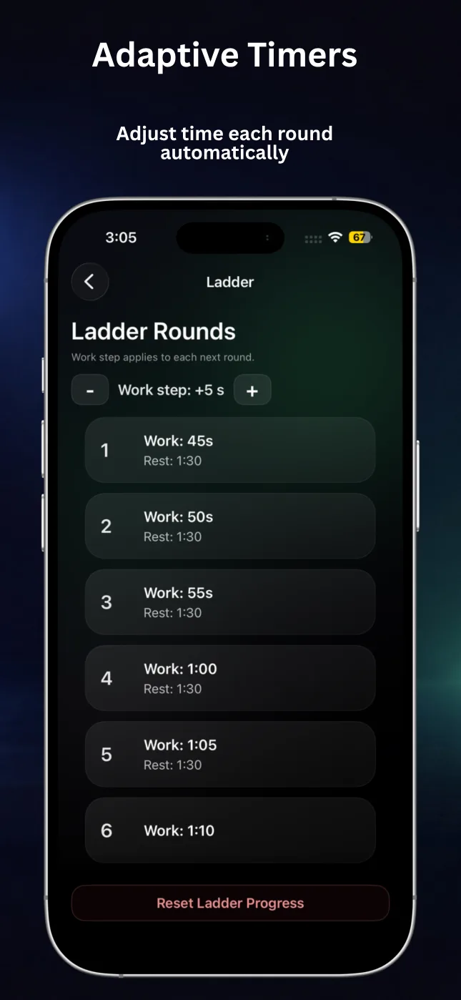
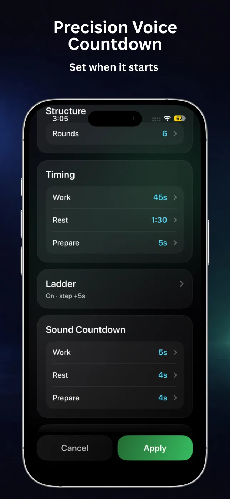
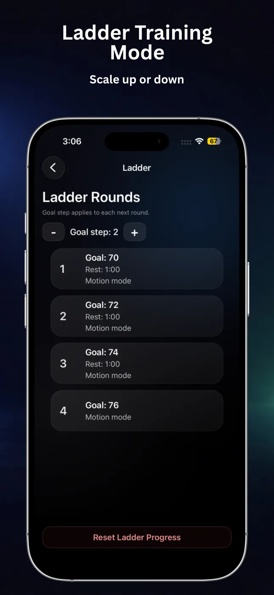
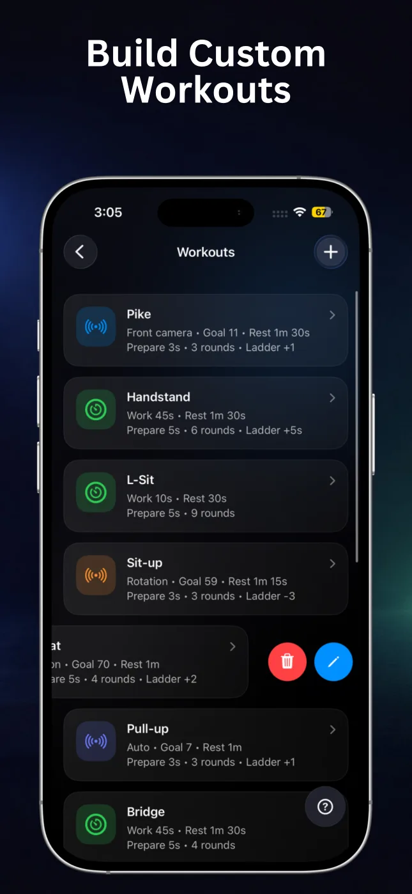

Automatic rep counting
Use motion, rotation, automatic detection, or the front camera so supported exercises can be counted while you train.
RepChime combines a precise interval timer with automatic repetition counting. Build the session, start moving, and let your iPhone keep the rhythm.

RepChime keeps the workout structure visible and the controls simple, whether you train by time or by repetition goal.
Use motion, rotation, automatic detection, or the front camera so supported exercises can be counted while you train.
Set Work, Rest, Prepare, and rounds for short circuits, long holds, or repeatable interval sessions.
Increase or decrease time and repetition goals from round to round for structured progressive sessions.
Stay off the screen with countdown sounds, round cues, and optional spoken guidance from RepChime Pro.
Save Timer and Counter setups, edit favorite routines, and launch the right workout in a few taps.
RepChime Pro can keep workout timing visible with Live Activities on the Lock Screen and Dynamic Island.
Large numbers, clear phases, and a dark interface make RepChime easy to read between sets and across the room.





Both modes use the same clear workflow: configure a session, press Start, and follow the visual and audio rhythm.
Create HIIT, EMOM-style, mobility, or hold sessions with separate Work, Rest, and Prepare times. Add rounds, sound countdowns, and time ladders.
Set a goal and choose motion, rotation, automatic, or front-camera detection. RepChime supports push-ups, sit-ups, pull-ups, and squats.
RepChime keeps intervals and repetitions visible while you train. This Short shows a real calisthenics workout using the app.
Workout With My Bro · RepChimeRepChime is an iPhone fitness utility with two main modes: a configurable HIIT timer for interval sessions and a goal-based counter that can track supported repetitions using device sensors or the front camera.
The current App Store listing names push-ups, sit-ups, pull-ups, and squats. Available detection modes vary by exercise; front-camera counting is available for push-ups.
Yes. Counter mode offers motion, rotation, automatic, and front-camera detection options. Accuracy depends on the exercise, device placement, movement range, lighting, and selected sensitivity.
Yes. You can save Timer and Counter presets and quickly return to favorite configurations. RepChime Pro adds more preset capacity and the full editing workflow.
Free workouts are intended for foreground use. RepChime Pro adds workout background support features, including Live Activities and workout state preservation.
No account is required. Workout presets and settings are designed to stay on your device. Apple handles App Store purchases and entitlement status.
Build the workout once. Let RepChime handle the timing, counting, and cues while you focus on the movement.
Download RepChime free